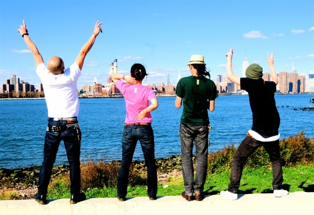

Stage
In addition to crazy festival booths and authentic Japanese restaurants, CJS MATSURI 2009 also prides itself in its spectacular line of stage performances throughout the event! From traditional performing arts to just crazy fun game show-style activites, you won't want to miss a thing!
-
4:00pm - 4:10pm
Opening Ceremony
We will begin Matsuri 2009 with a ribbon cutting ceremony celebrating our fifth annual Matsuri! CJS President Sayuri Shimoda will also give us her thoughts on Matsuri and highlight the fun activities and booths at Matsuri 2009.
-
4:10pm - 4:20pm
Columbia University Kendo
It's a bird! No. It's a plane! No. It's the Columbia University Kendo Club! Returning once again to Matsuri, the CU Kendo Club will showcase some of their best moves and will amaze you with with their cool techniques with their shinai! Watch as they perform their formations and battle each other!

-
4:20pm - 4:45pm
"2kg Curry Eating Contest" brought to you by Go Go Curry
2 KILOGRAMS! Imagine watching a stage filled with contestants stuffing 2kg of curry into their stomachs. Rice, curry, fried cutlet and shrimp fry toppings, and some cabbage on the side. Thats' what this is all about!
-
4:45pm - 5:15pm
New York Wild Rice
Vocal & Guitar: Ichizo / Bass: Yosuke / Drums: Shingo
We are New York Wild Rice. We mainly play English-language covers of legendary 80s/90s Japanese punk band The Blue Hearts. We play loud, and we play hard. We plan to eventually incorporate some original songs, but for now, our mission is to convey the passion and strong message of The Blue Hearts to the people of New York.
New York Wild Rice made their debut at the 2008 Nippon Jam hosted by the NYJSA. -
5:15pm - 6:00pm
Uzuhi
Far East from their Mother Land, in New York City, The Japanese Punk Rock band, Uzuhi, was born in Fall 2004. Uzuhi means “the Sun” in Japanese. The origin of the name came directly from their strong creed of music, “Music Has No Borders.” As the Sun shines the world, Uzuhi plays music toward the world.
Check out their myspace page at http://www.myspace.com/uzuhi.
 -
6:00pm - 6:45pm
CU Teacher's College Taiko Society
TAIKO is Japanese drums. Drums have a long and significant history in Japan. Thanks to the Taiko Society at CU's Teacher's College, you can see first hand the exhiliration of Japanese taiko. Not for the weak of heart...
If you want to learn more, visit their website at http://www.tc.columbia.edu/students/taiko/.
-
6:45pm - 7:30pm
Happy Fun Smile
CJS is happy to invite Happy Fun Smile again this year after their awesome performance in 2005. Happy Fun Smile is an Okinawa-style band based here in New York. We always love watching them perform.
Listen to some of their songs on their myspace page at http://www.myspace.com/happyfunsmile
-
7:30pm - 8:00pm
10Tecomai
The body goes beyond words.
It is neither a full length novel nor a two hour theatrical play. All is dedicated in a song that does not even last a mere five minutes. There, lies an almost tragic, yet passionate expression of emotion.
Japanese culture and hundreds of other cultures Our project's foundation is created when these meet. It is based on a traditional yet contemporary dance form called Yosakoi.
While holding a prop called "Naruko" in both hands, The dancers intensely and dramatically dance as the chanter's cryinstigates the piece.
Various expression is created when all of the above is combined.
"10tecomai", a Yosakoi Dance Project. This dance won't stop. This dance can't be stopped.
To find more about 10tecomai visit their webpage at http://www.10tecomai.com/.
-
8:00pm - 8:10pm
Closing Ceremony
Watch as the CJS board ends Matsuri 2009 with a traditional Bon Odori dance for your enjoyment.